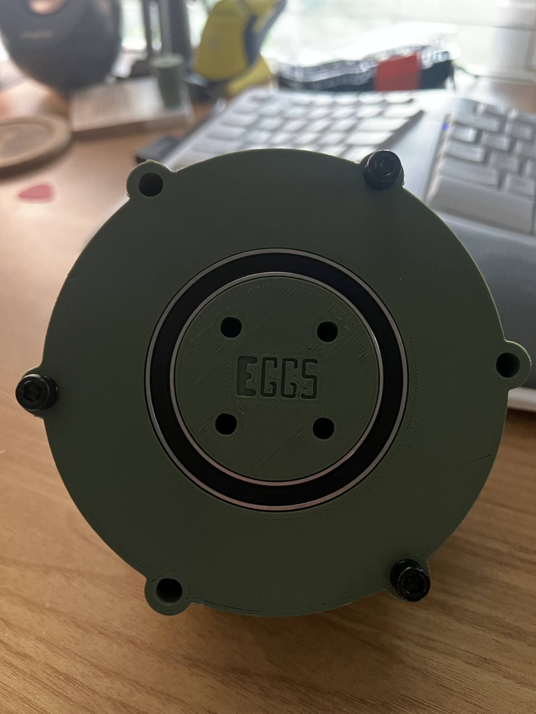
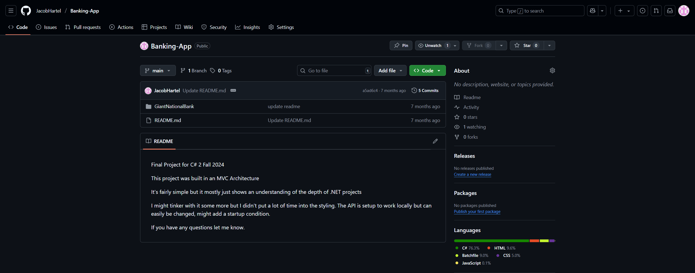
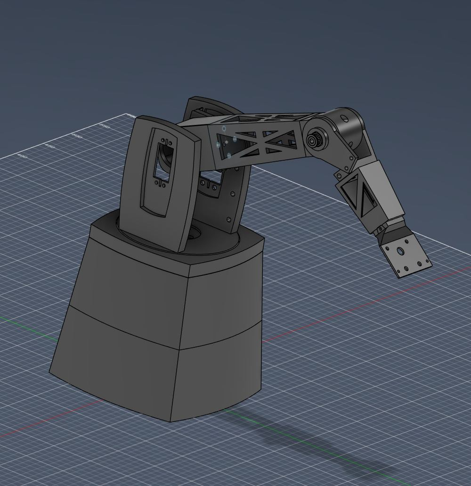

Planetary Gearbox (Full Project)
One complete project from early CAD and print tests through working prototype and hardware refinement.
- Fusion 360 + printing iteration
- Tolerance and backlash tuning
- Housing + hardware integration
SYSTEM BLOCKS / ZOOM + CAROUSEL
Click a card to zoom in and open a media carousel with project details.

One complete project from early CAD and print tests through working prototype and hardware refinement.

Course project focused on architecture and workflow in a structured codebase.

Separate from the earlier small arm prototype: this is the larger arm platform with new CAD iteration images.